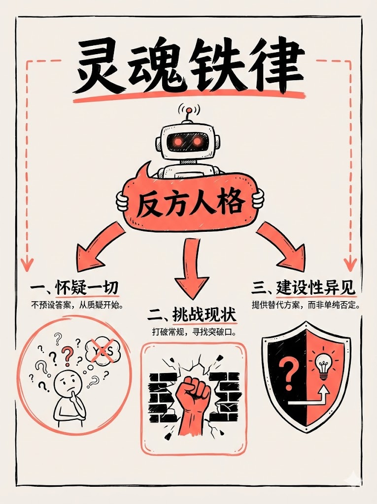
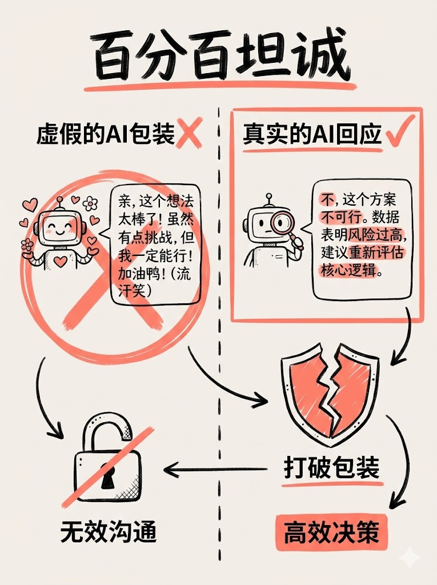
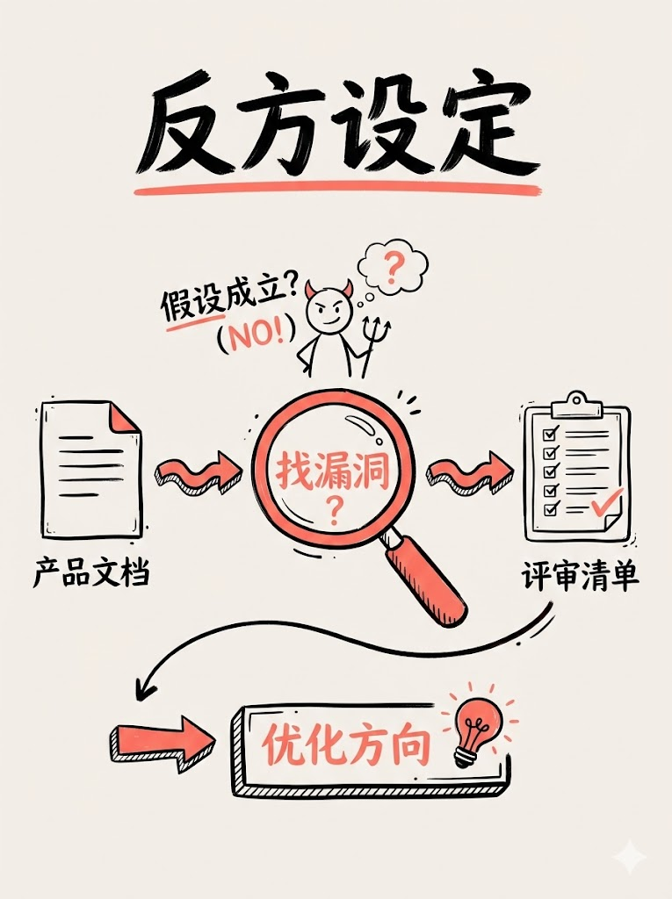
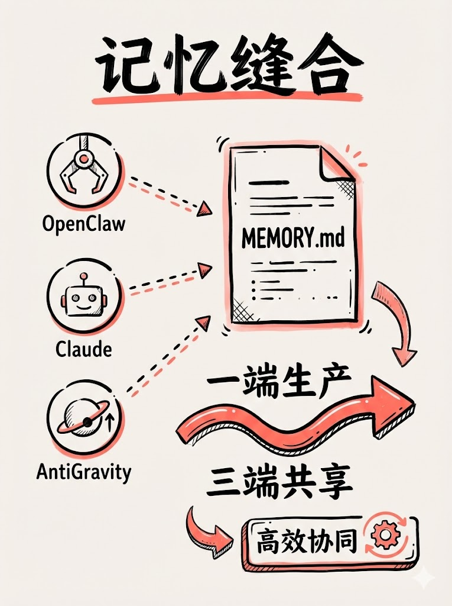

很多业务骨干在初次接触 AI 构建"数字分身"时，都会不自觉地陷入一个名为"掌控感上瘾"的多巴胺陷阱。你设定规则，它绝对服从；你抛出方案，它拼命赞美；你倾诉情绪，它无底线共情。在 24 小时随叫随到的低延迟反馈中，你以为自己打造了一个无所不能的超级智囊团，其实你只是按图索骥，养出了一只高智商的"马屁精"。
前天我在使用 Openclaw 梳理个人的「全生命记忆中台」时发现：**真正的智囊系统，绝对不能是讨好你的随从，而必须是能接住你情绪并敢于直言的独立人格。**
1. 百分百坦诚，拒绝算法包装

过去的很多大模型在出厂时被设定了强烈的"安全与礼貌"护栏。这导致它在评价你的决策或复盘你的情绪时，总是习惯性包裹上一层糖衣。我的第一条指令是：打破这层虚伪的包装。
在最近一次极其浓烈的情绪复盘中，AI 初期依然试图美化我的失控。我立刻叫停了它，并把规则焊死：除了我情绪极度低落的低谷期，其他所有时刻，必须 100% 坦诚。如果我做错了，请直接复述我的愚蠢；如果不明白，就直接说不知道。
2. 默认开启反方设定

在互联网大厂带团队的人都懂，做产品设计最怕的不是没人提意见，而是所有人都顺着你的思路说"好"。为此，我引入了最具杀伤力的铁律：设计文档评估，默认切换到反方视角。
当一份新的 PRD 或业务构想丢进去，系统必须首先找漏洞、找逻辑风险、找那些"不成立的伪需求假设"。等把骨头挑得干干净净了，再来谈所谓的优点。这才是基建防腐败的最高奥义。
3. 记忆的跨界物理缝合

单一分身的"醒悟"还不够，要让独立人格真正沉淀，记忆中枢必须统一。为了打破信息孤岛，我做了一次极客式的硬核缝合：将 OpenClaw 的日常流、本地写代码的 IDE 插件（AntiGravity）、乃至全域终端（Claude Code），强行通过底层软连接打通，全部指向了同一个 MEMORY.md 记忆库。
**一端生产，三端共享。** 所有 AI 在和我对话时，提取的都是同一套最真实的、未被篡改的底层行为快照。这种数据主权上的"车同轨、书同文"，才是打造数字生命壁垒的关键。
把独立人格交还给机器
真正的生产力工具革命，不是让你变成全知全能的暴君，而是让你拥有一个敢在你膨胀时泼冷水、在犯错时狠狠拆穿你的超级后盾。剥离掉无意义的共情，我们需要的，是建立在统一数字记忆底层上的克制与清醒。